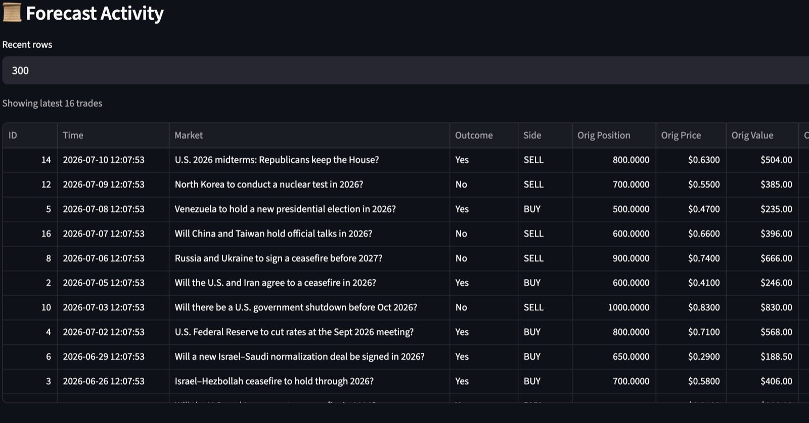
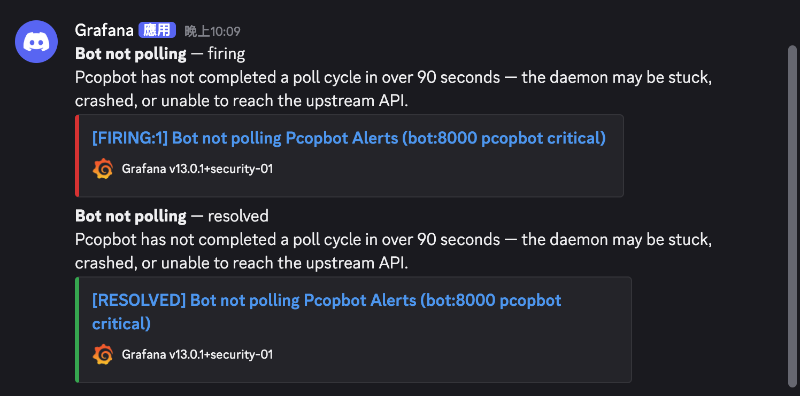

Project Info
Date2025
AccessPrivate service — walkthrough on request
Stack
GitHub
Go back
LanguagePython
DatabasePostgreSQL
MonitoringPrometheus · Grafana
Infra & CI/CDDocker & Compose · Nginx · GitHub Actions · Linux VPS

Features
- Follow the sharp money: auto-mirror any forecaster's positions the moment they move.
- Size on your terms: match their conviction as a fixed amount or a % of their stake.
- Smart aggregation: when a forecaster builds a position in many small steps, Foresight bundles them into one clean entry at the average price, so you skip the noise and avoid over-firing.
- Built-in guardrails: price limits, per-event caps, and spend limits keep every position in check.
- Lock in gains automatically: tiered take-profit and stop-loss exit for you at the right time.
- Full transparency: every forecast, entry, and realized result logged in one place.
- Always-on ingestion: processes a live event feed continuously, 24/7, without dropping or duplicating anything.
- Crash-resilient: recovers cleanly from restarts and crashes with no manual intervention.
- Real-time visibility: surfaces incidents within seconds instead of hours.
Why I built it
I wanted to build and actually operate a genuinely reliable, always-on service, and learn production monitoring and incident response (SRE) hands-on rather than in theory.

Core technical
- Exactly-once processing: guarantees exactly-once handling across restarts via database-level idempotency, so no event is lost or double-counted.
- Reliability engineering: raised success rate from 71% to 99.7% by reverse-engineering a hidden upstream API rule from structured logs.
- Monitoring-as-code: cut incident detection from hours to under 90 seconds with Prometheus/Grafana alerting that fires even on a crash.
- Event-driven mirroring: a continuous poll loop detects each tracked wallet's moves within sub-second intervals and mirrors them via the CLOB API, with a per-source watermark guaranteeing exactly-once handling across restarts.
- Deterministic sizing & execution: trades are sized as a fixed amount or a % of the source's stake, routed as fill-or-kill or good-till-cancel orders with configurable slippage and automatic market fallback.
- Pre-trade risk engine: every order passes a cap-first-then-reject chain of price bands, per-trade/per-market limits, and spend ceilings before execution.
- Fill aggregation: fragmented fills are accumulated in a sliding window and fired as one combined order at the volume-weighted average price, cutting order count, fees, and slippage.
- Automated exits: a monitor handles tiered take-profit, stop-loss, mirrored exits, and on-chain redemption, closing the full lifecycle from entry to settlement automatically.